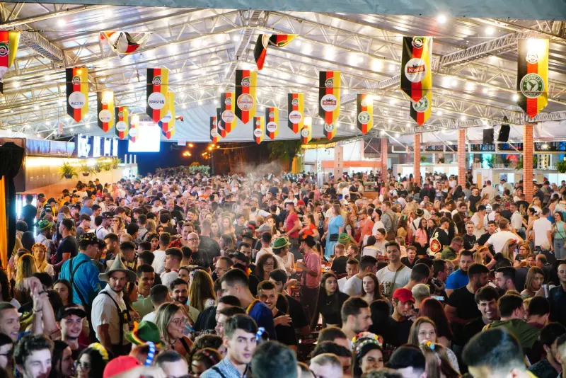
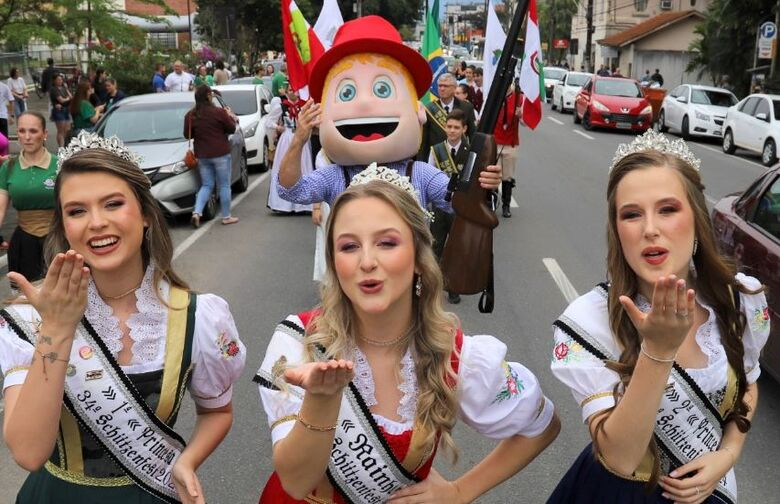
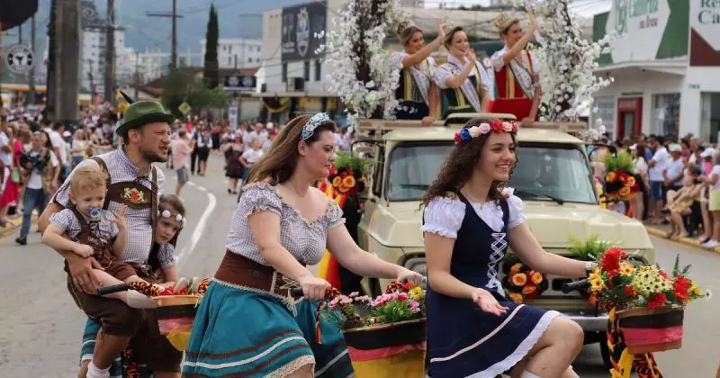
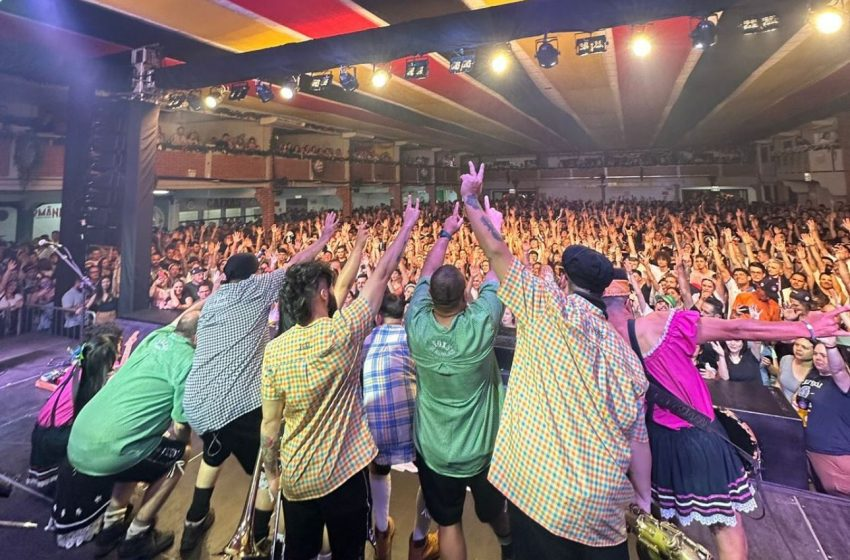
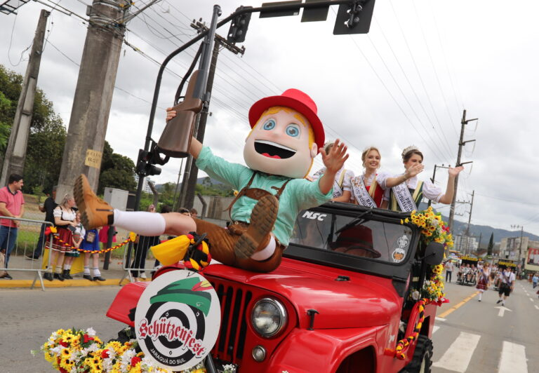
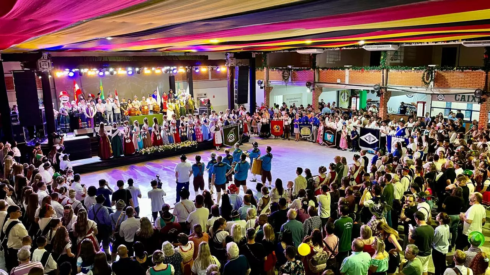

Schützenfest — tradição, música e cultura em Jaraguá do Sul

Editorial
A Schützenfest não é apenas uma festa — é um marco cultural que reflete as tradições alemãs de Jaraguá do Sul e mantém vivas as memórias de gerações passadas. Este evento, que atrai turistas de todo o Brasil, celebra a união da música, dança e gastronomia, além de reforçar a importância de preservar nossa história. Como jornal, nosso objetivo é trazer a você todas as perspectivas deste evento grandioso, analisando desde o impacto cultural até as inovações do evento de 2025.
Neste editorial, discutimos como a festa dos atiradores de Jaraguá do Sul tem se modernizado ao longo dos anos, sem perder suas raízes. Desde os novos investimentos em sustentabilidade até a maior presença das gerações mais jovens, a Schützenfest se reinventa, mas sem abrir mão daquilo que a torna única. Um evento como nenhum outro, que transforma nossa cidade por uma semana.
Notícias
1. Inauguração da 35ª Schützenfest reúne milhares no desfile
A Schützenfest de 2025 iniciou com grande estilo, atraindo mais de 10 mil pessoas para o desfile de abertura. O evento foi marcado pela exibição de trajes típicos, carros alegóricos e a presença de autoridades locais e da realeza da festa. A festa dos atiradores promete ser a maior edição de todos os tempos, com atividades para todas as idades, de danças folclóricas a apresentações de bandas.

2. Gastronomia típica da Schützenfest ganha destaque especial
Em 2025, a gastronomia da Schützenfest se reinventa. Ao lado das tradicionais salsichas, chucrute e chope, novos pratos foram adicionados ao cardápio, como o pretzel recheado e o peixe frito, que agradaram tanto os turistas quanto os moradores. A novidade deste ano ficou por conta da feira gourmet, que trouxe chefs locais para apresentar novas versões de pratos típicos com uma pegada mais contemporânea.
3. Tecnologia e sustentabilidade entram em cena na festa de 2025
Em 2025, a Schützenfest de Jaraguá do Sul deu um passo importante rumo à sustentabilidade e à modernização. O evento agora conta com espaços recicláveis e uma maior presença digital, com sistemas para facilitar a compra de ingressos e interatividade nas redes sociais. Em um esforço para atrair o público jovem, a organização também instalou pontos de Wi-Fi gratuitos e criou experiências imersivas com tecnologia de realidade aumentada.

Reportagens
Reportagem 1: A origem da Schützenfest e seu impacto na cidade
A Schützenfest nasceu como uma pequena reunião entre atiradores de Jaraguá do Sul e se tornou um dos maiores eventos culturais do estado de Santa Catarina. Desde sua fundação, no final do século XIX, a festa tem atraído turistas de diferentes partes do mundo, trazendo visibilidade para a cidade e influenciando diretamente a economia local. Esta reportagem traz uma viagem no tempo, explorando os bastidores e a evolução deste evento cultural.
Reportagem 2: A influência da imigração alemã na Schützenfest
A Schützenfest é mais do que uma festa popular — ela é uma verdadeira celebração da imigração alemã em Jaraguá do Sul. Como a festa reflete a cultura dos imigrantes que chegaram ao Brasil há mais de 100 anos? Neste artigo, exploramos como as famílias de origem germânica ainda influenciam as tradições da festa, desde a culinária até as danças típicas. A participação ativa das famílias da comunidade continua sendo um pilar importante para a realização do evento.

Entrevista
Entrevistado: João da Silva, presidente da Comissão Organizadora da Schützenfest
Pergunta: "Quais são as principais inovações que o público pode esperar na Schützenfest de 2025?"
Resposta: "Em 2025, buscamos trazer mais interatividade para o evento, além de tornar a festa mais sustentável. Também investimos em tecnologias para melhorar a experiência do visitante, como pagamentos digitais, Wi-Fi gratuito e uma maior presença nas redes sociais. A nossa maior inovação, porém, está no aspecto social — queremos que a festa seja mais inclusiva e acessível a todos."

Classificados
- Vende-se traje típico alemão para Schützenfest – R$ 250 – Contato: 47 99999-1234
- Aluga-se chalé para hospedagem durante a festa – R$ 150 por noite – Contato: chaletschutzen@exemplo.com
Crônica
Durante o desfile, o cheiro da cuca quente se mistura com o som das marchas. As luzes piscando no céu, acompanhadas pelos fogos, criam uma atmosfera mágica que só a Schützenfest é capaz de oferecer. É um momento em que todos se unem, jovens e velhos, para celebrar não só uma festa, mas a cultura que nos une.

Resenhas
Resenha 1: Show da Banda X na Schützenfest
A Banda X trouxe uma mistura de música tradicional alemã com influências modernas, encantando o público. A apresentação foi um sucesso, encerrando a noite com uma performance de tirar o fôlego.
Resenha 2: O Filme “Tradição e Melodia” é a alma da festa
Exibido em diversos pontos da cidade, o documentário sobre a Schützenfest emocionou ao retratar as histórias de famílias e personagens que ajudaram a construir essa festa que é símbolo de Jaraguá do Sul.